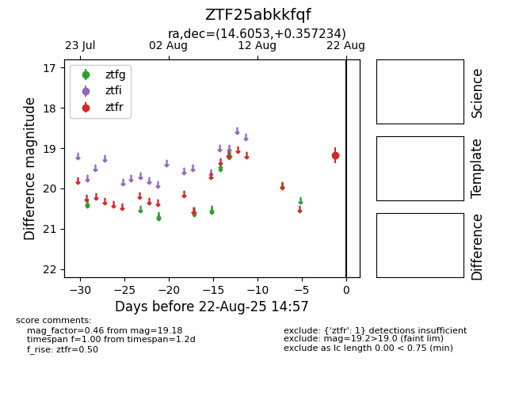

Target ZTF25abkkfqf at 2025-08-22 14:57, see:
FINK: fink-portal.org/ZTF25abkkfqf
Lasair: lasair-ztf.lsst.ac.uk/objects/ZTF25abkkfqf
ALeRCE: alerce.online/object/ZTF25abkkfqf
alt names
ZTF25abkkfqf (ztf,alerce)
coordinates:
equatorial (ra, dec) = (14.6053,+0.35723)
galactic (l, b) = (126.7102,-62.46327)
photometry
last ztfr=19.18
1 ztfr detections
